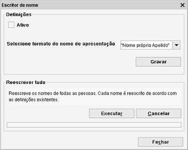

Reescrever nomes de pessoas
Caminho de menu: Ferramentas > Reescrever nome
Esta ferramenta permite ao Data Crow reescrever o nome de novas pessoas e/ou todos os nomes de todas as pessoas no módulo.

Ativo
Marque a caixa para reescrever títulos dos novos itens (e ao atualizar itens existentes). Desative esta funcinalidade, desmarcando a caixa
(predefinição).
Ordem
Selecione a forma de mostrar o nome na lista pendente.
Reescrever todos os nomes
Reescreve todos os nomes de todas as pessoas no módulo